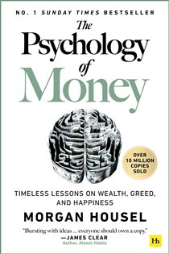
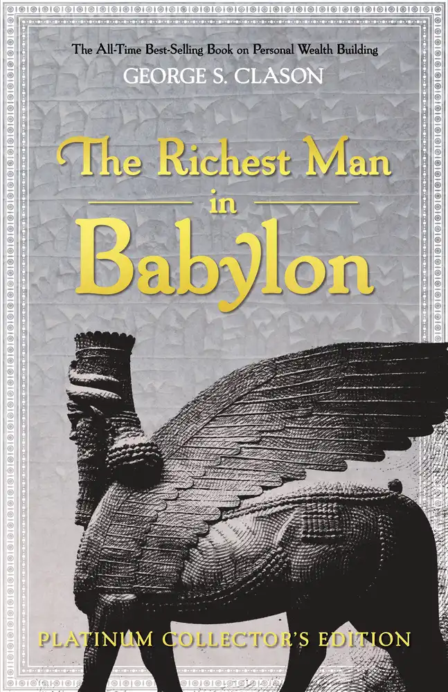

Library › The Psychology of Money vs The Richest Man in Babylon
The Psychology of Money vs The Richest Man in Babylon: Which Should You Actually Read?
Both books live on the same shelf: Money & Finance. Both are free to read here, in full, right now. The Psychology of Money (2020, Morgan Housel) argues: Doing well with money is a soft skill: how you behave beats what you know. Every time.… The Richest Man in Babylon (1926, George S. Clason) argues: Pay yourself first: a part of all you earn is yours to keep. Everything else in personal finance is …

The Psychology of Money
Financial success is not a hard science - it's a soft skill where behavior trumps intelligence. A janitor who buys and holds can die worth $8 million while a Harvard-educated executive goes bankrupt. Housel's 19 short chapters explain why: nobody's crazy (we a
READ THE PSYCHOLOGY OF MONEY FREE →
The Richest Man in Babylon
Told through parables set in ancient Babylon - the wealthiest city of the ancient world - Clason's 1926 classic distills personal finance into laws so simple they survive every era: save a tenth of all you earn, make your savings multiply, guard capital fierce
READ THE RICHEST MAN IN BABYLON FREE →⚖ The Straight Answer
Read The Psychology of Money if you want timeless lessons on wealth, greed, and happiness - doing well with mon
Read The Richest Man in Babylon if you want timeless money wisdom told as ancient babylonian parables - the origin
The honest order for most readers: start with The Psychology of Money for the base, then go deeper with the other. Both summaries are free, no paywall, in 26 languages.
Every summary is free: lessons, examples, action steps, audio in your language.